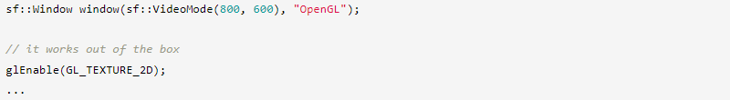
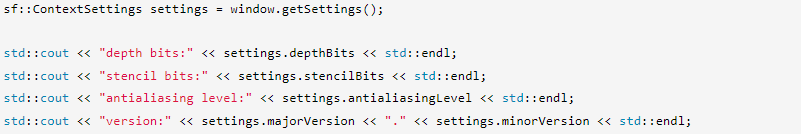

Это руководство не о самом OpenGL, а скорее о том, как использовать SFML в качестве среды для OpenGL и как смешивать их вместе.
Как вы знаете, одной из важнейших особенностей OpenGL является переносимость. Но одного OpenGL будет недостаточно для создания полных программ: вам нужно окно, контекст рендеринга, пользовательский ввод и т. д. У вас не будет другого выбора, кроме как написать код для конкретной ОС, чтобы обрабатывать все это самостоятельно. Вот где в игру вступает модуль sfml-window. Давайте посмотрим, как это позволяет вам играть с OpenGL.
Заголовки OpenGL не одинаковы для каждой ОС. Поэтому SFML предоставляет «абстрактный» заголовок, который позаботится о том, чтобы включить нужный файл.
#include <SFML/OpenGL.hpp>
Этот заголовок включает в себя функции OpenGL и ничего больше. Иногда люди думают, что SFML автоматически включает заголовки расширений OpenGL, потому что SFML сам загружает расширения, но это деталь реализации. С точки зрения пользователя загрузка расширения OpenGL должна обрабатываться так же, как и любая другая внешняя библиотека.
Затем вам нужно будет связать вашу программу с библиотекой OpenGL. В отличие от того, что он делает с заголовками, SFML не может предоставить унифицированный способ связывания OpenGL. Следовательно, вам нужно знать, на какую библиотеку ссылаться в зависимости от используемой операционной системы («opengl32» в Windows, «GL» в Linux и т. д.).
Функции OpenGL начинаются с префикса «gl». Помните об этом, когда вы получаете ошибки компоновщика, это поможет вам найти библиотеку, которую вы забыли связать.
Поскольку SFML основан на OpenGL, его окна готовы к вызовам OpenGL без каких-либо дополнительных усилий.
Если вы считаете, что это слишком автоматически, конструктор sf::Window имеет дополнительный аргумент, который позволяет вам изменить настройки базового контекста OpenGL. Этот аргумент является экземпляром структуры sf::ContextSettings, он предоставляет доступ к следующим настройкам:
Если какой-либо из этих параметров не поддерживается графической картой, SFML пытается найти ближайшее допустимое совпадение. Например, если 4-кратное сглаживание слишком велико, он пытается использовать 2-кратное сглаживание, а затем возвращается к 0.
В любом случае вы можете проверить, какие настройки SFML на самом деле использовал с помощью функции getSettings:
Версии OpenGL выше 3.0 поддерживаются SFML (если ваш графический драйвер может их обрабатывать). Поддержка выбора профиля контекстов 3.2+ и установки флага отладки контекста была добавлена в SFML 2.3. Флаг прямой совместимости не поддерживается. По умолчанию SFML создает контексты 3.2+, используя профиль совместимости, поскольку графический модуль использует устаревшие функции OpenGL. Если вы собираетесь использовать графический модуль, обязательно создайте свой контекст без настройки основного профиля, иначе графический модуль не будет работать правильно. В OS X SFML поддерживает создание контекстов OpenGL 3.2+ только с использованием основного профиля. Если вы хотите использовать графический модуль в OS X, вы ограничены использованием устаревшего контекста, который подразумевает OpenGL версии 2.1.